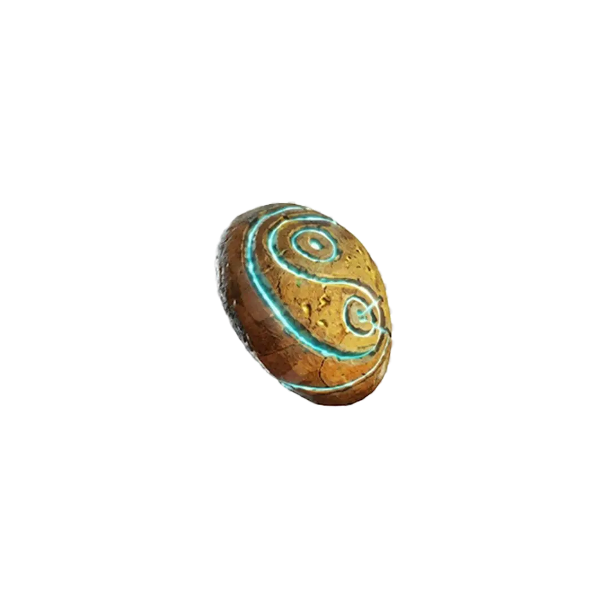

Ten relikt jest dostępny wyłącznie w Trybie Klątwa i obecnie wymaga pomocy kumpla, aby wywołać odpowiedni błąd w systemie.

Zacznij grę solo w trybie Trybie Klątwa. Nie ma znaczenia, który poziom trudności wybierzesz, metoda działa na każdym z nich. Przebijaj się przez hordy aż do rundy 19.
Udaj się do Garden Area (Obszar ogrodu). Portal prowadzący do wyzwania znajdziesz po lewej stronie od lokacji Wisp T.
Jak utrzymać ten stan? Masz trzy sposoby:
Po ukończeniu wyzwania otrzymasz relikt o potężnym, ale ryzykownym działaniu: